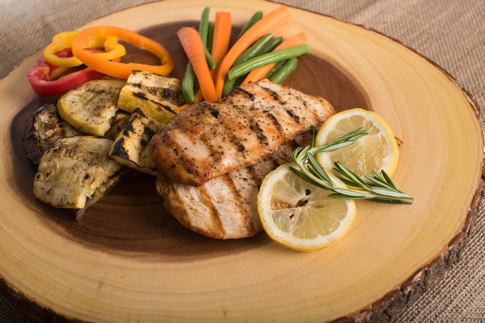
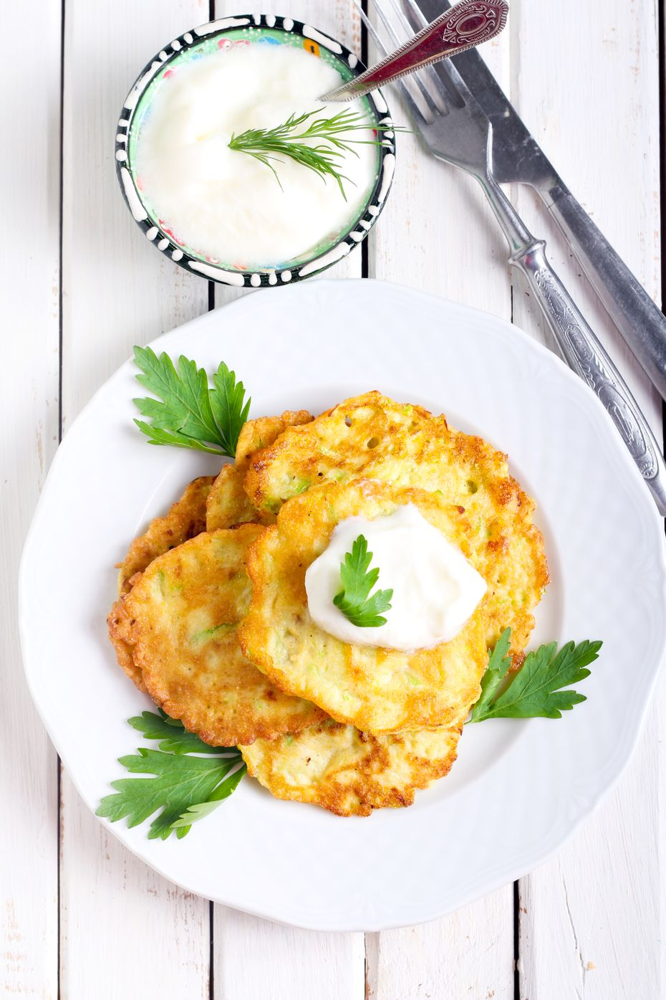
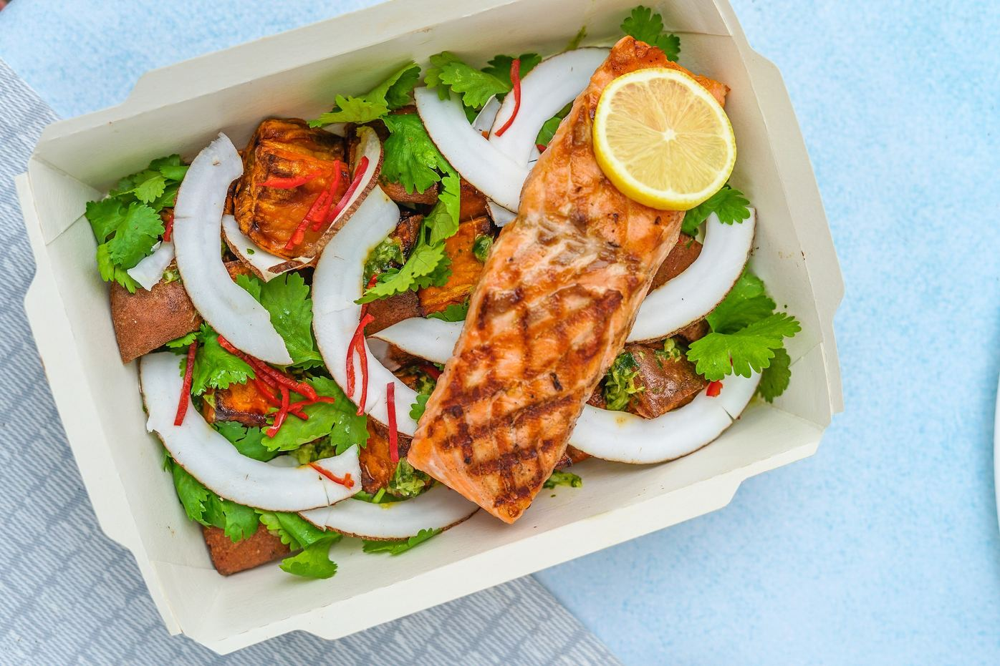
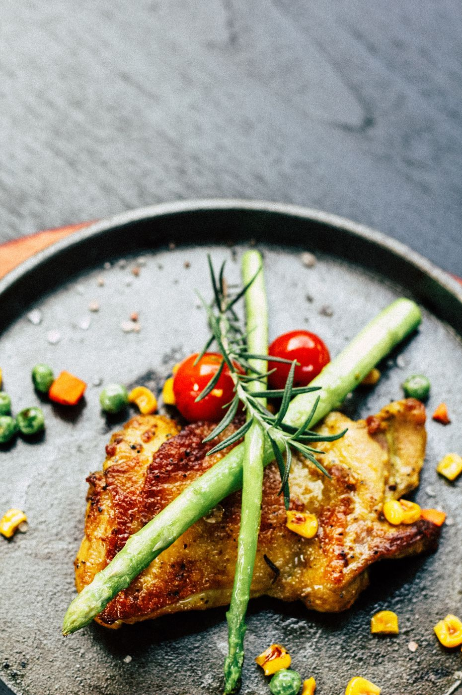
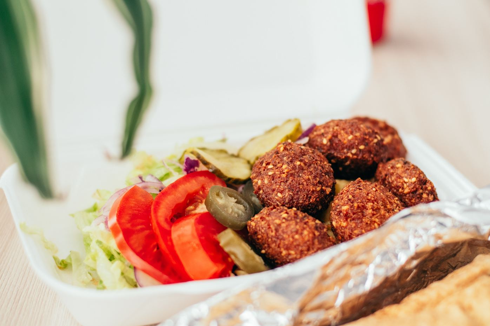
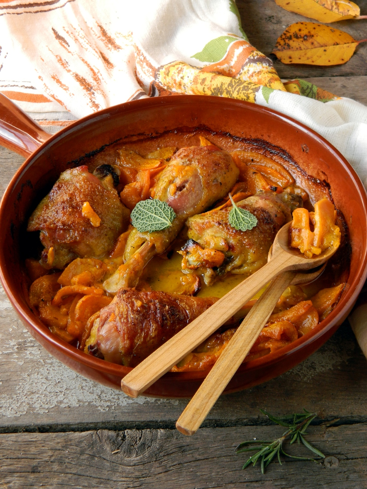

Chicken shawarma & taboulleh

Cardamon and sumac give the chicken its deep Middle Eastern flavors. It
tastes great with the tabbouleh salad mix featuring peppers, radish, and
herbs served with pickled red cabbage, carrot slaw, and pink onion.
Learn more
Fritters with seaweed salat & nutty freekah

These fritters are a delicious mix of smoky corn, green beans and tofu.
While the seaweed salad features a cocktail of carrot, red pepper,
mango, mint, lemon juice and ginger. And the freekah comes with spinach
and cashews.
Learn more
Sesame salmon with a noodle salat

Your salmon fillet is baked with toasted sesame seeds and served next to
a rice pasta salad with stuffed gherkin, carrot, and beetroot. To
fragrance the flavor we dress the pasta in sesame oil and add a tahini
dressing.
Learn more
Vietnamiese chicken vermicelli with a salat

Vietnamese-roasted chicken breast with brown rice vermicelli and soy
sauce. To balance the rich salty flavor we add raw grapefruit, red
pepper, gherkin pickle, coriander, and peanuts.
Learn more
Falafell with slaw, hummus & salsa

The roasted sweet potato with coriander and chickpea gives the falafel a
great flavor are accompanied by a chile pepper hummus. The salsa’s a
tangy mix of ripe tomatoes, finely chopped red onion, balsamic vinegar,
and extra virgin olive oil.
Learn more
Morrokan chicken & citrus bulgur wheat

A Moroccan-spiced chicken breast with rass el hanout and ginger. As well
as lemon and pomegranate, the mouthwatering bulgur wheat is flavored
with fresh mint and cumin. This dish also comes with beetroot and
carrot.
Learn more